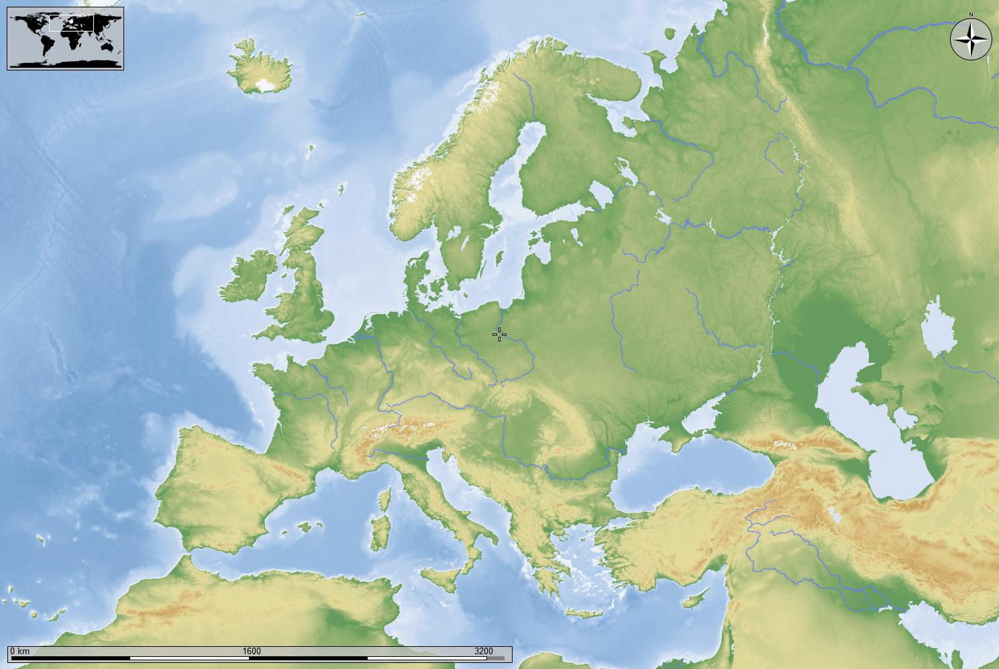

FSL-Le tappe del mio percorso
Un percorso visivo attraverso i progetti, le competenze acquisite e le tappe del mio sviluppo personale e accademico.
map Mappa delle Esperienze

Un percorso visivo attraverso i progetti, le competenze acquisite e le tappe del mio sviluppo personale e accademico.
